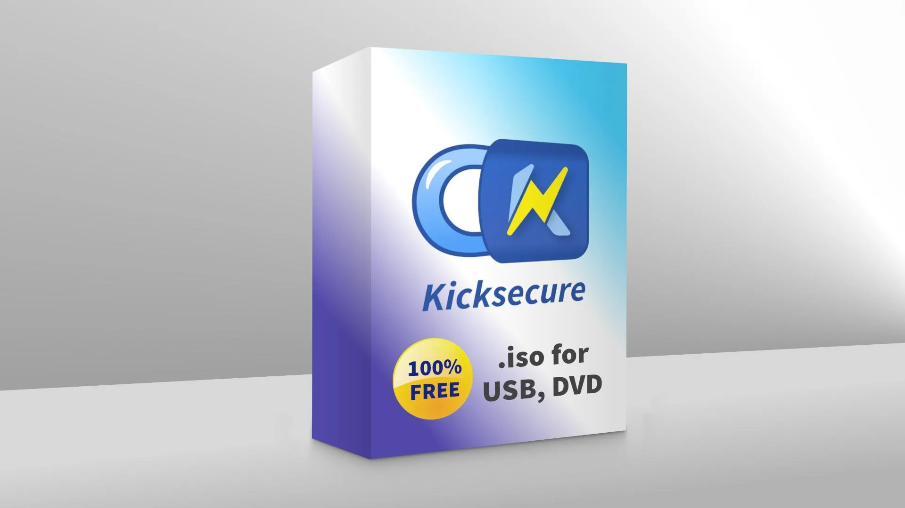
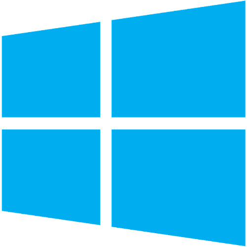
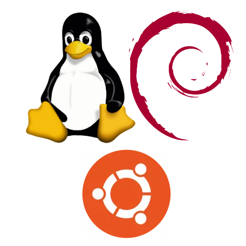
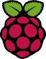
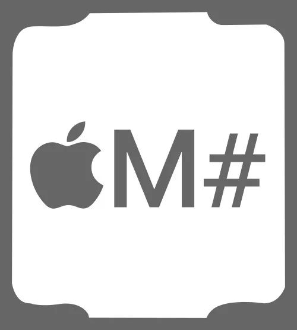
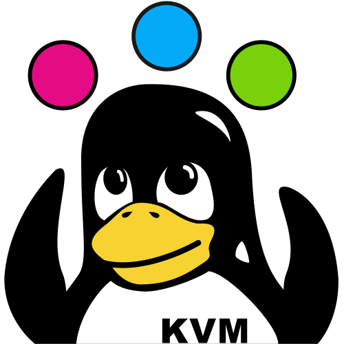

System RequirementsDocumentationISOPrevious page: System RequirementsIndex page: DocumentationNext page: ISODownload Kicksecure (FREE)

Kicksecure is available on the following platforms.
Kicksecure can be installed on a physical machine as the host operating system (OS), as a guest OS inside a virtual machine, or as a portable host OS on a USB data stick.
Installation
on
Computer USB
Installation
USB
Installation
  macOS
macOS VirtualBox
VirtualBox Qubes
Qubes KVM
KVM
 Install
Kicksecure on Debian (transform Debian into
Kicksecure)
Install
Kicksecure on Debian (transform Debian into
Kicksecure) chroot
chroot Source
Code
Source
Code
Read more about which version is best for you.
Logo |
Version |
Knowledge |
|---|---|---|
|
ISO |
|
|
USB |
|
ARM64 |
||
 |
Raspberry Pi (RPi) |
|
|
ppc64el |
|
|
RISCV64 |
|
|
Debian |
|
Windows |
||
|
Apple - Intel-based MacBook |
|
 |
Apple - Apple Silicon |
|
|
Apple - Non-Apple Hardware Hackintosh |
|
|
Linux |
Run Kicksecure in the VirtualBox virtualizer (Linux installer) |
|
VirtualBox |
|
|
Qubes |
|
 |
KVM |
|
|
chroot |
|
|
Source Code |
|